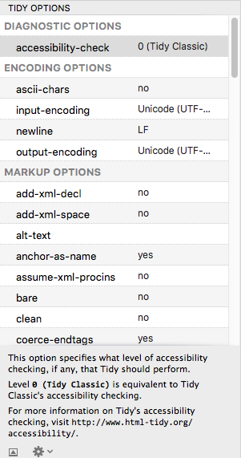

Find Descriptions for Tidy Options
Balthisar Tidy for Work offers a lot of options to correct, diagnose, and pretty-format your code. Learn how to discover the meaning of each of these options by following these few steps.

-
You can always consult the Tidy Options Reference Section for descriptions of all of the Tidy options that Balthisar Tidy for Work supports. However it’s often more convenient to…
-
Look at option descriptions in any Tidy Options panel. Any time you select an option, its description will appear at the bottom of this panel.
-
If the description is not visible, it can be revealed with the button at the bottom left of the Tidy Options panel.